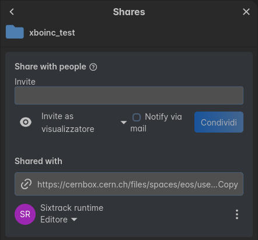

1. Xboinc
Xboinc is a package within the Xsuite project that provides tools for easily submit and manage tracking jobs on the BOINC computing platform. It is designed to streamline the process of job submission, management, and monitoring for users of the Xsuite framework in need for large-scale computing resources, with a project adaptable to volunteer-based computing. Note that the services provided by this package are available only to CERN users with a valid computing account.
NOTE: CURRENTLY, ONLY THE DEVELOPMENT SERVER IS AVAILABLE! Be sure to always set the dev_server parameter to True when using the package!
2. How to use Xboinc
2.1. Install Xboinc
Any Xboinc version must be used with a specific version of the Xsuite framework. To be sure you are using the correct version of Xsuite dependencies along with Xboinc, we highly recommend to install Xboinc in a dedicated Python virtual environment. You can create a new virtual environment with the following command:
python3 -m venv /path/to/your/new/venv
source /path/to/your/new/venv/bin/activate
Then, you can install Xboinc using pip:
pip install xboinc
or, if you want to install it from the source code (for example, if you want to contribute to the development of Xboinc), you can clone the repository and install it with pip:
git clone https://github.com/yourusername/xboinc.git
cd xboinc
pip install -e .
2.2. Subscribe to the Xboinc submitter e-group
To be able to submit jobs to the LHC@home project, you need to subscribe to the xboinc-submitters Egroup. You can do this by accessing the webpage https://e-groups.cern.ch/e-groups/Egroup.do?egroupId=10558435 and adding yourself in the Members tab.
2.3. Allocate a folder and register your username under the Xboinc server
To use Xboinc, you need to allocate a folder in either your AFS or EOS storage, which will be used to store your job results and other data. You can do this by running the following commands:
2.3.1. Folder in AFS
import xboinc as xb
xb.register("mycernshortname", "/afs/cern.ch/user/m/mycernshortname/my_xboinc_folder")
No more steps are needed as AFS can handle the I/O permissions for the Xboinc server automatically. However, be sure you have enough storage space available in your AFS folder!!!
2.3.2. Folder in EOS
Important!!! If you are using EOS, you need to set the proper permissions for the Xboinc server to access your folder!!
You can do this by accessing the desired folder from the CERNBox web interface, right-clicking on the folder and selecting “Share”, then adding the user a:sixtadm (n.b. this is the Xboinc service account) and invite as editor. It should look like this:

After that, you can register your username with the Xboinc server by running the following command:
import xboinc as xb
xb.register("mycernshortname", "/eos/user/m/mycernshortname/my_xboinc_folder", permissions_given=True)
Note that specifying permissions_given=True assumes that you have already set the appropriate permissions for the Xboinc service account on the specified EOS path. Not doing so will result in a NotImplementedError as we currently cannot manipulate EOS ACLs directly.
2.4. Submit a job
To submit a job to the LHC@home project, you can use the JobSubmitter class from the xboinc package. With JobSubmitter, you can create a study, which will contain a set of jobs to be executed. Ideally, you should create a study for a single line to track, with multiple jobs for spreading the number of particles to track. However, it is also possible to create a study with multiple lines.
Here is an example of how to submit a job:
import xtrack as xt
import xboinc as xb
# prepare the line
line = xt.Line.from_json("path/to/your/line.json")
# create a job manager
job_manager = xb.JobSubmitter(
user="mycernshortname",
study_name="a_relevant_study_name",
line=line,
dev_server=True # currently, the dev server is the only one available
)
# prepare a big batch of particles
particles = xt.Partilces(...)
# create jobs with the job manager with splits of particles
for i in range(0, len(particles.x), 1000):
this_part = particles.filter(
(particles.particle_id >= i)
& (particles.particle_id < i + 1000)
)
# create job
job_manager.add(
job_name=f"job{i}", # relevant job name
num_turns=num_turns, # number of turns to track
particles=this_part, # particles to track
checkpoint_every=1000, # checkpoint every 1000 turns
)
# submit the jobs to the server!
job_manager.submit()
Note that the jobs will be executed on a single CPU core from a volunteer computer, we therefore recommend balancing the workload across multiple jobs to optimize the usage of available resources. Xboinc will offer a time estimate for each job, which can help you to decide how many particles to track in each job. Note also that we are currently enforcing a lower time limit of 90 seconds for each job, as it becomes not practical to use the BOINC platform for jobs that take less time than that.
2.5. Retrieve the results
When the jobs are completed, the Xboinc server will store the results in your allocated folder in compressed tar files. You can decompress and explore them by using the JobRetriever class from the xboinc package. The simplest way to do that is:
import xboinc as xb
for job_name, result_particles in xb.JobRetriever.iterate("mycernshortname", "a_relevant_study_name", dev_server=True):
print(f"Job {job_name} completed with particles: {result_particles.to_dict()}")
2.6. Check your subscription and jobs status
You can check if you are subscribed to the Xboinc service and if your jobs are running or completed by using the check_user_subscription and query_registered_work_units functions from the xboinc package:
import xboinc as xb
# Check if the user is subscribed to the Xboinc service
print("Am I subscribed?")
print(xb.check_user_subscription("mycernshortname"))
# Query the registered work units for the user
print("What are my jobs?")
# Probes the work units for the user registered in this Xboinc installation
print(xb.query_registered_work_units(dev_server=True))
Other convenience functions are available in the xboinc package, be sure to inspect the API documentation and docstrings for more details!